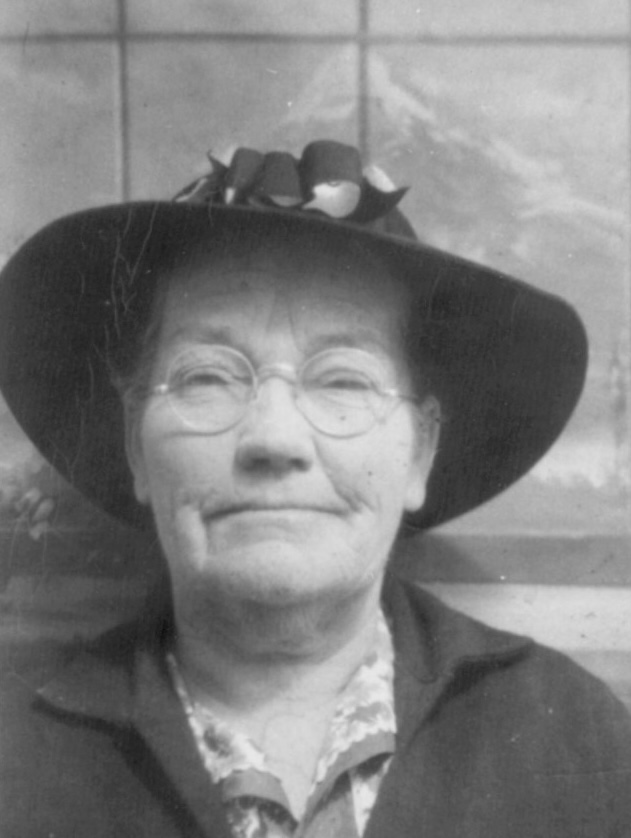
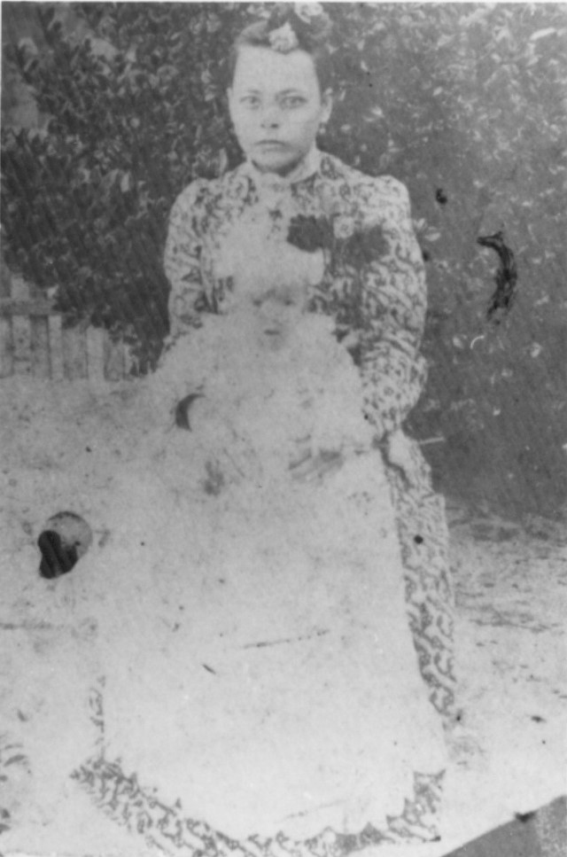
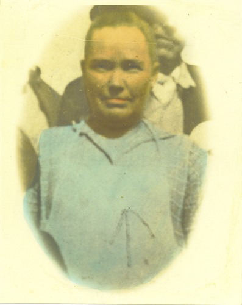

Mary Frances Darling
Born 1881

Life Events
Born: June 4, 1881
Family
Father: Everett Darling
Mother: Sarah Lusindy Wadsworth
Siblings
Spouse: Daniel M. Mathis
Children
Military Service
No military service information has been added.
Biography
Mary Frances Darling was the wife of Daniel M. Mathis and the mother of Lela Mae Mathis. The family was living in Madison County, Florida, when the 1910 United States Census was recorded.
Photos


Sources
-
1899 Marriage Record — Daniel Mathis and Mary F. Darling
Type: MarriageMarriage record for Daniel Mathis and Miss Mary F. Darling. The marriage license was issued on December 31, 1898, by the Madison County Court, and the marriage was performed on January 1, 1899, by O. F. Peck, Notary Public.
Location: Madison County, Florida
Supports: Marriage of Daniel Mathis and Mary F. Darling on January 1, 1899, Marriage location in Madison County, Florida, Identification of Mary F. Darling as Daniel Mathis's wife
-
1900 U.S. Census — Daniel Mathis Family
Type: CensusThe 1900 United States Census records Daniel Mathis as head of household, living with his wife Mary and their infant son Claude in Madison County, Florida. Daniel's birth was recorded as December 1874, although his 1918 World War I draft registration gives December 13, 1873. Mary's birth was recorded as June 1879.
Location: Precinct 3, Madison County, Florida
Household Members:
- Daniel Mathis — Head, born December 1874, age 25
- Mary Mathis — Wife, born June 1879, age 20
- Claude Mathis — Son, born January 1900, age 4/12 (4 months)
Supports: Daniel Mathis's residence in Madison County, Florida, in 1900, Marriage of Daniel and Mary Mathis by 1900, Mary Mathis's reported birth month and year of June 1879, Claude Mathis as the son of Daniel and Mary, Daniel Mathis's reported birth month and year of December 1874
-
1910 U.S. Census — Daniel Mathis Family
Type: CensusThe 1910 United States Census records Daniel Mathis and his wife Mary living in the Norton Creek area of Madison County, Florida, with their children. Their daughter Lela was recorded as seven years old and born in Florida. Her age is consistent with her September 26, 1902, birth date.
Location: Norton Creek, Madison County, Florida, United States
Household Members:
- Daniel Mathis — Head, age 37 (handwriting unclear; possibly 27
- Mary Mathis — Wife, age 28
- Claude Mathis — Son, age 10
- Lela Mathis — Daughter, age 7
- Rubin Mathis — Son, age 5
- Frank Mathis — Son, age 3
- Unnamed — Infant son, age 5/12 (5 months
Supports: Daniel Mathis and Mary Frances Darling as Lela Mathis's parents, Lela Mathis's residence in Madison County, Florida, in 1910, Lela Mathis's age of seven in 1910, The Mathis family household in 1910
-
1947 Florida Death Certificate — Mary Frances Darling Mathis
Type: Death CertificateFlorida death certificate No. 21468 for Mary Frances Mathis, born June 4, 1880, in Madison County, Florida, and deceased November 7, 1947, in Mayo, Lafayette County. The certificate identifies her husband as Daniel Mathis, her father as Everette Darling, and her mother as Sarah Blanton. Sarah Blanton is believed to be Sarah M. Wadsworth, who was previously married to Greenbery Blanton before marrying Everett Darling.
Location: Mayo, Lafayette County, Florida
Supports: Birth of Mary Frances Darling on June 4, 1880, Death of Mary Frances Mathis on November 7, 1947, Everette Darling identified as her father, Sarah Blanton identified as her mother, Marriage to Daniel Mathis, Burial at Airline Cemetery